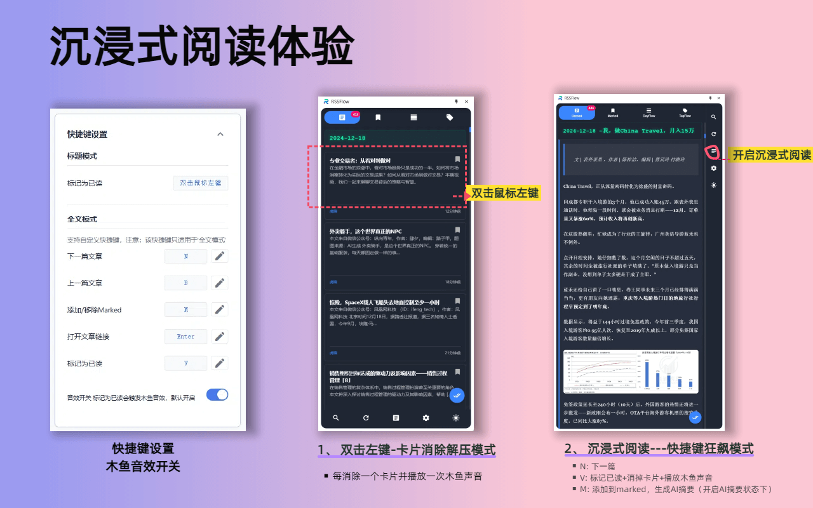
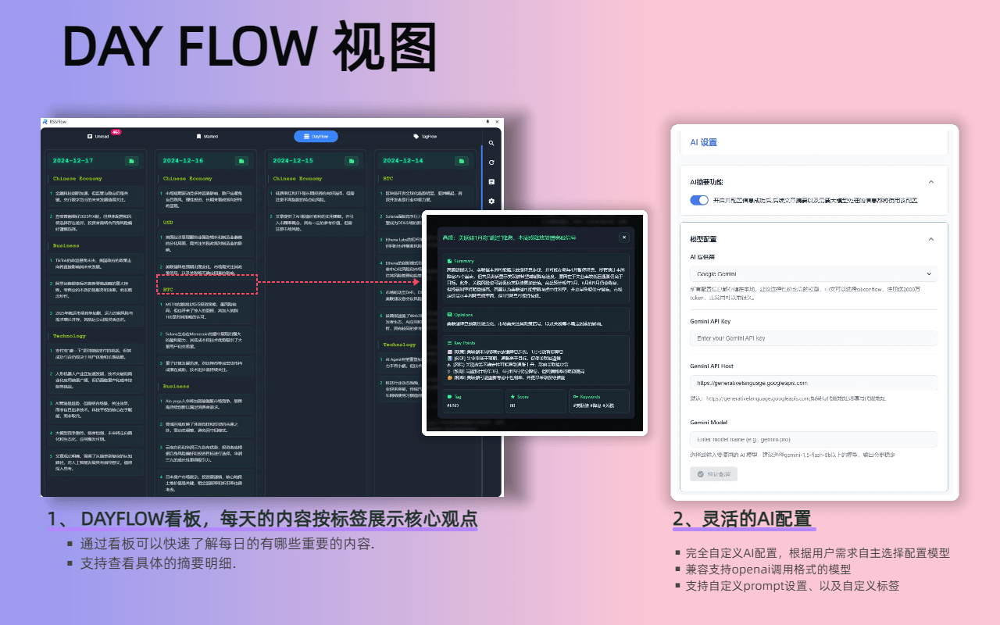
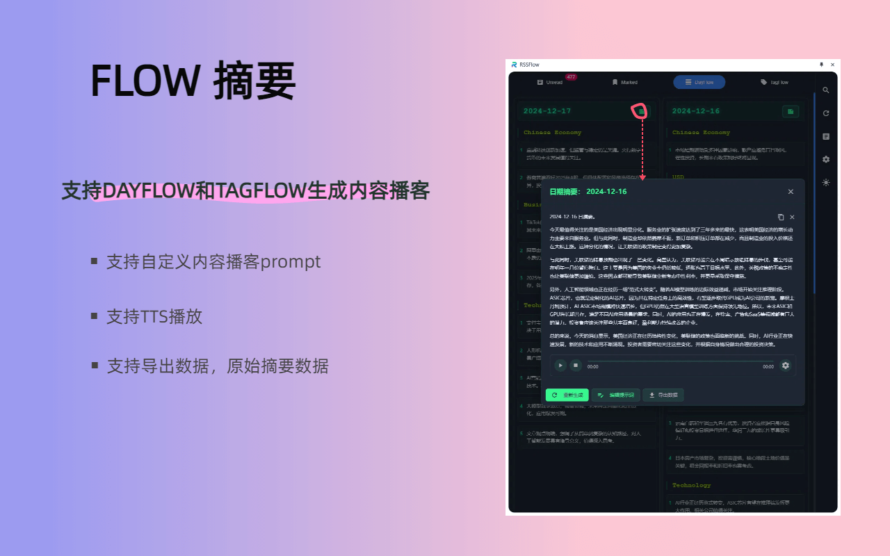

RSSFlow Reader
一个拥有AI摘要和智能内容流的现代 RSS 阅读器，让你的阅读体验焕然一新。
100,000+
活跃用户
4.8
Chrome商店评分
50+
支持的语言


核心功能
智能 RSS 管理
支持多种 RSS 格式解析，智能处理内容编码，自动重试机制确保订阅源稳定性。
AI 文章摘要
集成 OpenAI、Google Gemini 和 SiliconFlow，自动生成文章摘要、关键词和观点分析。
多视图模式
支持全文/摘要视图切换，提供 DayFlow（按日期分组）和 TagFlow（按标签分组）等多种浏览模式。
高效阅读体验
支持键盘快捷键、木鱼阅读模式（标记已读时播放木鱼音效）、文章内容懒加载优化。
内容播客功能
支持为 DayFlow、TagFlow 生成内容播客、TTS 播放，让阅读变得更加轻松。
自动化功能
定期刷新获取最新文章，自动清理过期内容，后台更新未读计数。
用户体验优化
响应式设计适配不同屏幕，支持深色/浅色主题，实时搜索和过滤功能。
功能展示



播客功能激活码
Y8CL-6IO6-O8C3-02GO
ZRPY-RM8R-I5DV-AX9E
98M5-UZ56-GMCP-HUGU
EVKQ-GJ8R-N8PL-J8DA
P5GR-YXGT-0FTI-NCHM